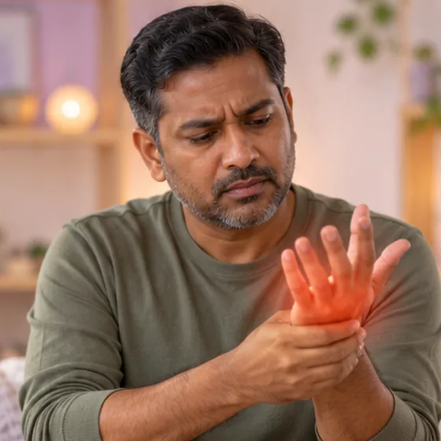

Thoracic outlet syndrome
Squeezing of nerves or blood vessels in the narrow gap between the collarbone and first rib
What it is
The nerves or blood vessels that run to the arm are squeezed near the neck and shoulder, which can cause pain, tingling or a heavy, weak arm and hand.
- Neck, shoulder and arm
- Young to middle-aged adults
- Ache, tingling, weak hand
- Which doctor
- Family doctor, then bone, nerve or vascular specialist
- Common in
- Adults with poor posture, neck injury, extra neck rib, or repeated overhead work
- Contagious
- No
- Course
- Varies; many people improve with care and better posture; a doctor can explain options
Common signs

Tingling down the armArm paraesthesia 
Tingling in the handParaesthesia 
Stiff, aching neckCervicalgia 
Pain in the shoulderShoulder pain 
Weak, clumsy gripHand weakness
Why it happens
A fall, knock or road accidentTrauma Heavy or repeated workOveruse
Other causes
- Poor posture, such as a rounded back and forward head
- Some people are born with an extra rib or a tight band of tissue
See a doctor first if
- Chest pain, trouble breathing or sudden heavy sweating: call 999
- An arm that suddenly becomes swollen, blue, pale or cold: go to hospital now
- Face drooping, speech trouble or weakness on one side of the body: call 999
- Hand weakness, wasting muscles or clumsy fingers that keep getting worse
- Pain or tingling that wakes you at night or lasts for weeks
If any apply, please see a doctor before a session.
This page is general information. Please keep taking your normal medicine and keep seeing your doctor.
Keep taking your normal medicine and keep seeing your doctor. Our session is a gentle support and does not replace medical care.
Looking after yourself
- Sit and stand tall, and keep your screen at eye level
- Take breaks from overhead work and long desk time
- Use a lighter bag or share the load between both shoulders
- Do gentle shoulder and neck movements that do not bring on the tingling
- Ask your doctor before starting any new exercise plan
Tell your therapist
- Numb or tingling arm
- Recent neck injury or surgery
- Recent shoulder injury or surgery
- A blood clot or a new swollen leg
- Blood-thinning medicine
- Pacemaker or metal implant
Your therapist will go through this with you before starting.
Questions and answers
What is Thoracic outlet syndrome?
Squeezing of nerves or blood vessels in the narrow gap between the collarbone and first rib. The nerves or blood vessels that run to the arm are squeezed near the neck and shoulder, which can cause pain, tingling or a heavy, weak arm and hand.
What are the common signs of Thoracic outlet syndrome?
Tingling down the arm · Tingling in the hand · Stiff, aching neck · Pain in the shoulder · Weak, clumsy grip
Why does Thoracic outlet syndrome happen?
A fall, knock or road accident · Heavy or repeated work
How can I look after myself with Thoracic outlet syndrome?
Sit and stand tall, and keep your screen at eye level · Take breaks from overhead work and long desk time · Use a lighter bag or share the load between both shoulders · Do gentle shoulder and neck movements that do not bring on the tingling · Ask your doctor before starting any new exercise plan
Can an AI Body Master session help with Thoracic outlet syndrome?
A session is gentle, needle-free meridian support for your wellbeing. It does not treat or cure Thoracic outlet syndrome and never replaces your medicine or your doctor. Tell your therapist about it before the session starts.
Related conditions
References: General information based on public health sources such as Mayo Clinic, NHS, Cleveland Clinic and NCBI StatPearls.
Page updated: 2026-11-04